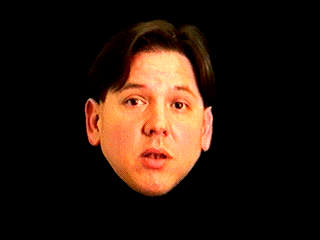

PDQ and Critical Theory

PDQ makes several associations to issues dealt with in the practice of critical theory. He recites experiences as a gay man and defends the position of white man, but the overall approach seems more of an attack on Critical Theory than an alliance with it. PDQ is definable as neither puppet nor puppeteer. It denies a contextual interpretation and confuses the issue of critical interpretation. What is to be interpreted literally and what is to be defined metaphorically or even ironically become inseparable. The reality of the situation becomes unknown. Any such critical interpretation becomes lost in an abstract oblivion of signifiers and signifieds.
to Return